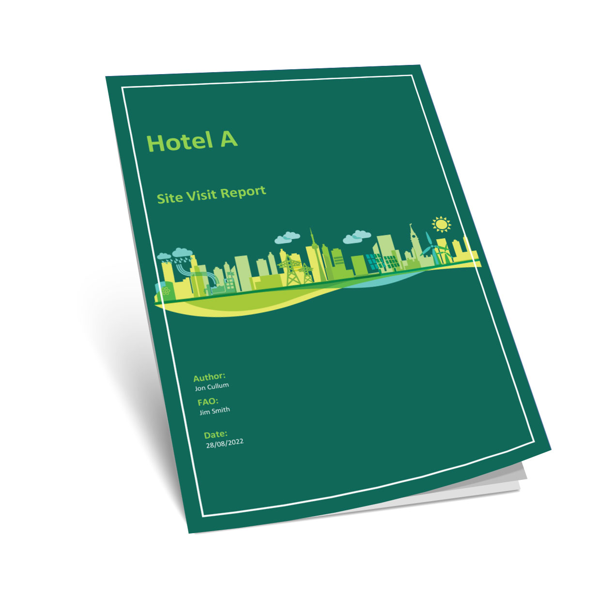

Energy audit vs report and roadmap — what's the difference?

An energy audit answers: "What did we find?" A Discovery Assessment Report and Roadmap answers: "What did we find, what do we do first, what will it save, and how will we prove it?"
Boards and site teams need the second. Ranked actions, payback logic, complexity flags and a measurement route for every line — that's what makes energy work stick.
A typical audit produces a comprehensive document that may sit on a shelf. Our Discovery Assessment Report and Roadmap is built for action: findings are clear, every item is ranked, every saving qualified, every result verifiable.